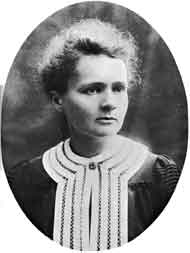

|
|
MARIE CURIE 1867-1934
Nama
asalnya: Maria Sklodowska. Marie Curie lebih masyhur dari
banyak ilmuwan yang saya masukkan dalam daftar seratus tokoh
buku ini. Tetapi, tampak oleh saya, kemasyhurannya tidaklah
bertolak dari arti penting ilmiah yang sudah diperbuatnya,
tetapi lebih banyak disebabkan karena dia seorang wanita.
Kariernya menunjukkan, dalam jenis jenis pekerjaan yang
mungkin, seorang wanita sanggup melakukan penyelidikan
ilmiah yang punya kualitas tinggi. Atas dasar ini dia
menjadi amat gemerlapan, sehingga banyak orang yang punya
kesan bahwa dialah orang yang menemukan radioaktif. Tetapi
nyatanya radioaktif diketemukan oleh Antoine Henri
Becquerel. Tak perlu dipersoalkan lagi bahwa prioritas jatuh
pada Becquerel, karena baru sesudah Marie Curie membaca
laporan penemuan Becquerel barulah dia dan lakinya, Pierre,
yang juga sama-sama ilmuwan berbakat mulai penyelidikan
masalah itu.
Yang sesungguhnya hasil karya Marie Curie yang
mengesankan adalah penemuan dan pemisahan elemen kimia
radium. Sebelum ini, dia sudah menemukan elemen radioaktif
lain yang dijulukinya "polonium," diambil dari nama negeri
asalnya, Polandia. Ini memang betul-betul karya yang
mengagumkan, tetapi tidaklah mempunyai arti penting yang
menonjol dalam teori ilmiah.
Tahun 1903, Marie Curie, Pierre Curie dan Antoine Henri
Becquerel secara bersama-sama peroleh Hadiah Nobel untuk
bidang fisika. Dan tahun 1911 Marie Curie dapat lagi Hadiah
Nobel, kali ini untuk bidang kimia. Ini membuatnya orang
pertama yang peroleh Hadiah Nobel dua kali.
Menarik untuk dicatat bahwa Marie Curie punya anak-anak
kecil tatkala dia menyelesaikan penyelidikan ilmiah paling
pentingnya. Puteri tertuanya, Irene, juga menjadi ilmuwan
yang berhasil gemilang. Irene kawin dengan pria yang juga
ilmuwan berbakat, Jean Frederic Joliot. Sepasang suami istri
itu bersama-sama menemukan radioaktif buatan (artifisial).
Untuk penemuan ini (yang bisa dianggap "keturunan" dari
penemuan radio-aktif alamiah!) menyebabkan Joliot dan Curie
membagi Hadiah Nobel tahun 1935. Puteri kedua Marie Curie,
Eve, menjadi musikus terkenal dan pengarang. Betul-betul
sebuah keluarga luar biasa!
Nonya Marie Curie meninggal dunia tahun 1934, kena
leukemia. Besar kemungkinan akibat berulang kali berhadapan
dengan benda-benda yang mengandung radioaktif.
|